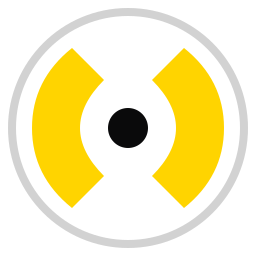
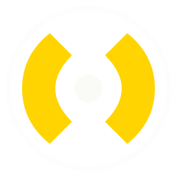
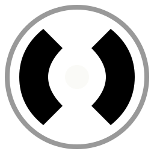

safeclaw · brand specifications
Logo Spec Sheet
디자이너 핸드오프 자료. ClawMark · Wordmark의 기하·여백·컬러·사용 금지 사항. 전달 파일은 모두 /brand 폴더에 SVG로 포함됨.
① Primary lockups



② Construction · clear space
Construction grid
32×32 unit grid. 외곽 ring 14.5u (선택). 두 jaw는 좌우 대칭 quadratic curve. Center dot r=2.5u — 잡힌 초점.
Clear space
마크 높이의 0.25×를 모든 방향 최소 여백으로 확보. 워드마크는 mark의 x-height 만큼.
노란 영역 = 침범 불가. 점선 박스 = 마크 바운딩.
③ Color system
④ Sizing & minimums
⑤ Don'ts
⑥ Files delivered
ClawMark.svg
기본 — 라이트 배경 · 옐로우 jaws + 블랙 dot
ClawMark-Inverse.svg
다크 배경 — dot이 본화이트
ClawMark-Mono.svg
단색 (currentColor) — 각인·팩스
Wordmark.svg
수평 lockup · 라이트 (default)
Wordmark-Inverse.svg
수평 lockup · 다크
Wordmark-Stacked.svg
정방형 surface · 사인보드 / 머치
© 2026 safeclaw, inc. · spec rev 0.1